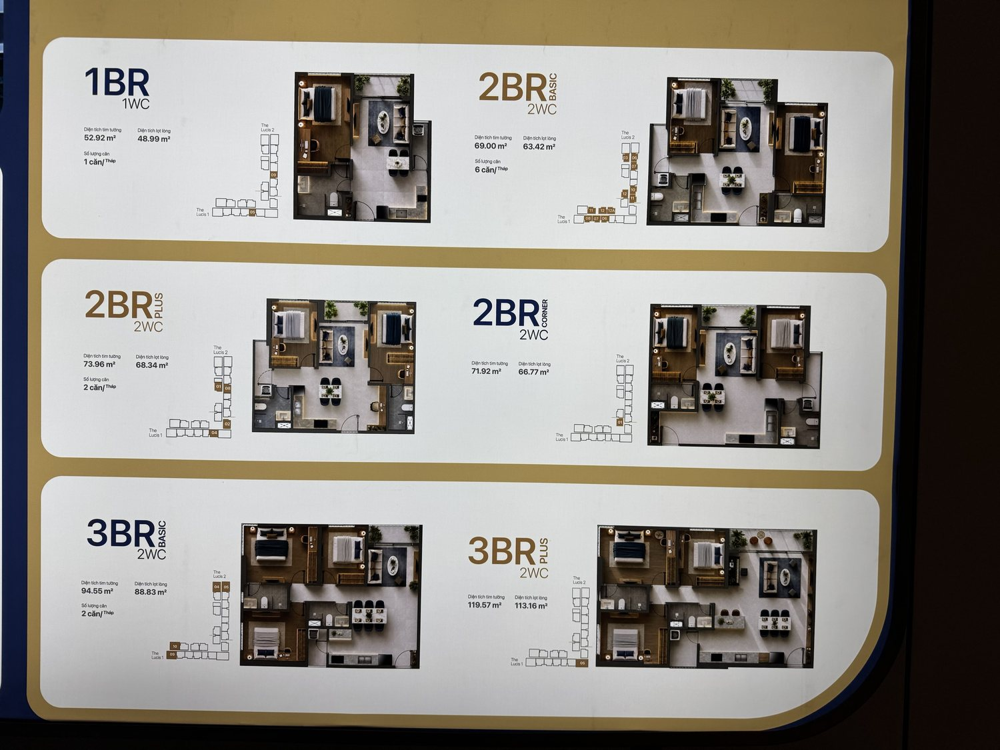
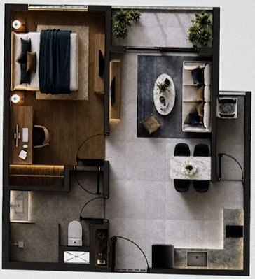
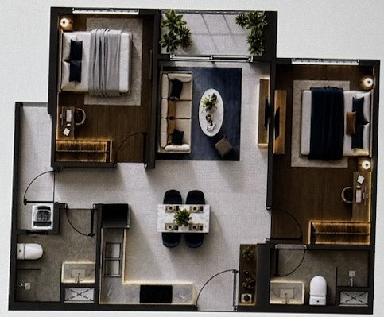
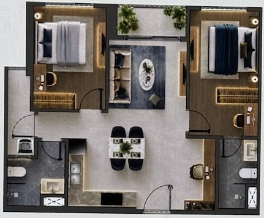
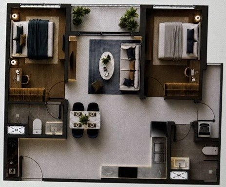
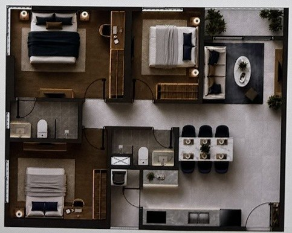
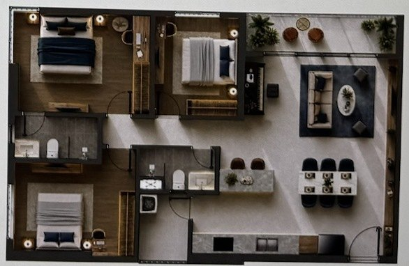

TT Genesis (Nhà Bè): thông tin dự án, 6 mẫu căn hộ và số căn từng loại mỗi tầng

1. Tóm tắt nhanh
theo một trang tin rao
cao 30 tầng
kèm số căn mỗi tầng
TT Genesis là dự án căn hộ của liên doanh do TT Capital dẫn đầu tại khu dân cư Đào Sư Tích, xã Nhà Bè, phía nam TP.HCM, cạnh khu đô thị Phú Mỹ Hưng. Dự án có hai tháp The Maris và The Lucis. Bảng mặt bằng tại nhà mẫu công bố sáu mẫu căn từ 1 đến 3 phòng ngủ, kèm số căn của từng mẫu trên mỗi tầng điển hình, nên bài này cho biết cả cơ cấu căn hộ chứ không chỉ diện tích.
| Hạng mục | Thông tin |
|---|---|
| Tên dự án | TT Genesis |
| Chủ đầu tư | Liên doanh TT Genesis do TT Capital dẫn đầu (với các đối tác Nhật Bản theo thông tin liên doanh) |
| Địa chỉ | Khu dân cư Đào Sư Tích, xã Nhà Bè, TP. Hồ Chí Minh |
| Quy mô | Hai tháp The Maris và The Lucis, mỗi tháp 30 tầng; đất khoảng 18.882 m²; một tin rao ghi 1.426 căn |
| Mẫu căn công bố | 1PN, 2PN Basic, 2PN Plus, 2PN Corner, 3PN Basic, 3PN Plus |
| Tiện ích | Hơn 8.000 m² tiện ích ngoài trời, hơn 2.800 m² trong nhà (88 tiện ích theo thông tin dự án) |
| Phân khúc | High-end theo ghi nhận của chúng tôi; giá công bố khoảng 69 triệu/m² |
| Bàn giao | Dự kiến quý IV/2029 theo một tin rao; chưa có xác nhận chính thức |
2. Vị trí
Dự án nằm ở khu Đào Sư Tích, Nhà Bè, ngay phía nam khu đô thị Phú Mỹ Hưng. Đây là khu vực đang phát triển với nhiều dự án căn hộ mới; bài này không đánh giá vị trí mà chỉ nêu những gì dự án công bố.
3. Sản phẩm
Bảng nhà mẫu ghi mỗi mẫu căn có diện tích tim tường và thông thủy, và số căn trên mỗi tầng ở cả hai tháp. Mẫu 2 phòng ngủ Basic chiếm một nửa số căn mỗi tầng, các mẫu Corner và Plus của 2 và 3 phòng ngủ chỉ có một đến bốn căn mỗi tầng.
| Loại / mã | Số PN | Tim tường (m²) | Thông thủy (m²) | Ghi chú |
|---|---|---|---|---|
| 1BR 1WC | 1 | 52,9 | 49,0 | 2 căn/tầng (cả 2 tháp) |
| 2BR Basic 2WC | 2 | 69,0 | 63,4 | 12 căn/tầng (cả 2 tháp) |
| 2BR Plus 2WC | 2 | 74,0 | 68,3 | 4 căn/tầng (cả 2 tháp) |
| 2BR Corner 2WC | 2 | 71,9 | 66,8 | 1 căn/tầng (cả 2 tháp) |
| 3BR Basic 2WC | 3 | 94,5 | 88,8 | 4 căn/tầng (cả 2 tháp) |
| 3BR Plus 2WC | 3 | 119,6 | 113,2 | 1 căn/tầng (cả 2 tháp) |
Căn hộ 1 phòng ngủ

Căn hộ 2 phòng ngủ



Căn hộ 3 phòng ngủ


4. Tiện ích và thiết kế
Thông tin dự án nêu hơn 8.000 m² tiện ích ngoài trời và hơn 2.800 m² tiện ích trong nhà, tổng 88 tiện ích; danh sách chi tiết chưa được công bố đầy đủ ở thời điểm này.
5. Giá tham khảo (gần đúng)
| Nguồn / loại căn | Mức giá | Ghi chú |
|---|---|---|
| Giá công bố khi kick-off | khoảng 69 triệu/m² | Kèm chính sách thanh toán 29 triệu/tháng, không vay (theo thitruongtaichinhtiente.vn) |
| Giá “rumor” trước đó | từ 71 triệu/m² | Cafeland, khoảng 2,8 tỷ/căn |
| Một tin rao | 69,44 triệu/m² | Căn 72 m² |
Mức giá được nhắc đến nhiều nhất là khoảng 69–71 triệu/m²; chưa phải bảng giá chính thức của chủ đầu tư.
6. Tiến độ và nguồn cung
- Nguồn cung: một tin rao ghi 1.426 căn cho hai tháp.
- Tiến độ: thông tin báo chí nêu dự án khởi công và ra hàng từ quý IV/2026; bàn giao dự kiến cuối 2029 theo một tin rao.
- Chưa có thông tin chính thức trong bài: số căn từng mẫu theo toàn dự án, bảng giá, pháp lý chi tiết.
7. Kết luận
TT Genesis cho thấy rõ cơ cấu căn hộ ngay từ bảng nhà mẫu: phần lớn là 2 phòng ngủ Basic, còn các mẫu Corner và Plus rất ít căn. Khi quan tâm một mẫu cụ thể, nên hỏi chủ đầu tư số căn còn lại của mẫu đó.